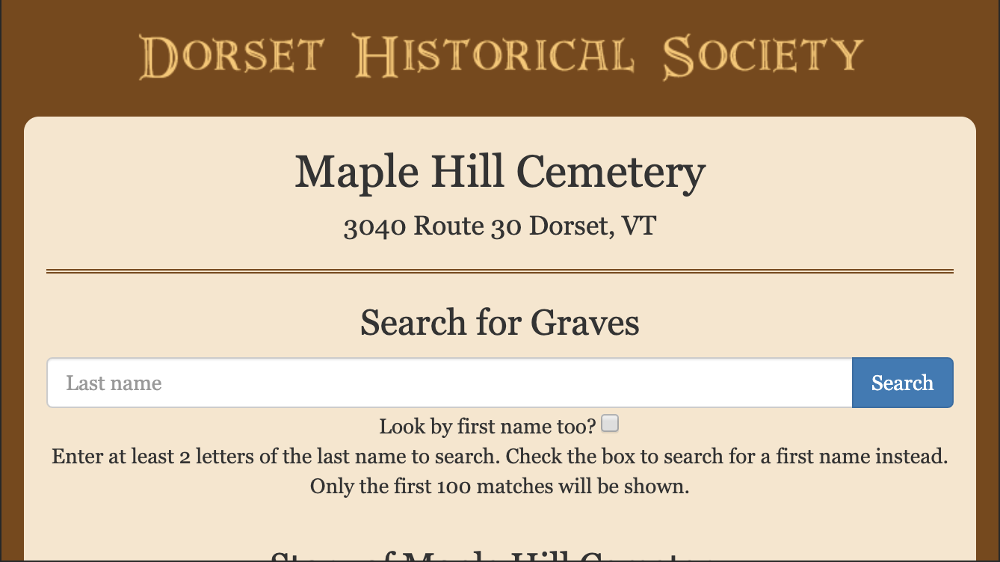
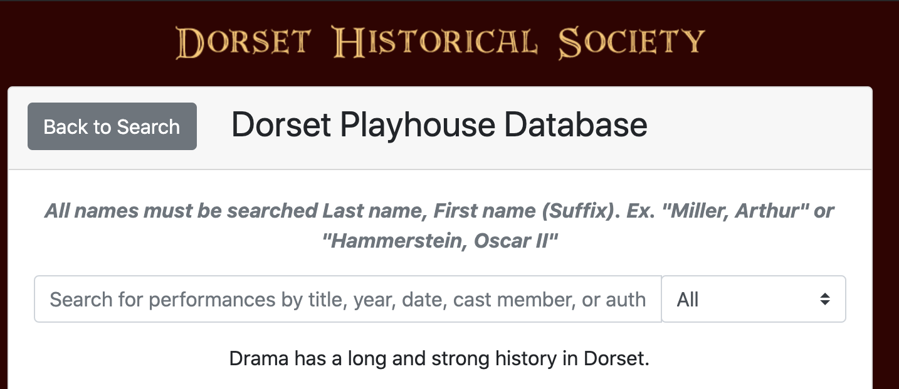

About me
I am a young software developer living in Southern VT. I just finished my freshman year at Union College, in Scenectady, where I study math, computer science, philosophy and German - such are the benefits of being undeclared. I've been writing code since 2nd grade, when I learned Java to help my older brother make Minecraft mods.
Inspired by my father's career in software development, I got deeper into computer science and gained more skills as I got older. Although I have only studied CS academically for one year, I entered the program studying data structures and have had the opportunity to take multiple junior/senior level courses.
Beyond tech, I work as a line and prep cook and I like to play the guitar, study theories of politcal organization, and find new and engaging ways to be a positive impact on my community and in the world.
Papers
If you'd like a sense for my philosophy work, here is an unpublished paper from Spring, 2020. It finds itself in the middle of the intellectualist / anti-intellectualist debate of "knowing-how," drawing its inspiration from Newell and Simon's work on the computer science concept of the "Physical Symbol System."
Computer Science Projects
Some projects may take a little while to load, because they are hosted using Glitch.
Recent Web-Dev
Here is a single component React library I designed as a consultant for NumFOCUS. It provides performant and accessible bindings for MathJax version 3 in React.
I made this in Spring 2017 as a voulenteer for my local historical society. The design targets coherence with their main site.
I made this in Summer 2019 as a voulenteer for my local historical society. The design targets coherence with their main site.
I started this project this spring with a friend from school. We drew inspiration from a number of other modern sites, with the goal of creating a clean but inviting experienced centered on communicating the message of the organization.
I personally oversaw the project and made the landing page, a 'Meet the Team' view, and a sample content page. I was lucky enough to hand off developement to my friend Ian who is now managing the project.
All that's to say is this project is currently under development and I am no longer on the team, so I'm not sure what the site uptime is like.
I threw this site together in an afternoon, and you can see the source on GitHub.
Systems / Academic Work
This is a passion project from a programming languages course I took spring of 2020. It is a lisp intepreter written with a focus on utilizing rust's algebraic data types and pattern matching control flows.
This project is probably only interesting if you know rust.
This is a collection of work from an AI class I took winter 2020. It contains stuff from A* search to ANN's, QLearning, and genetic algorithms to grow trees.
Detailed readme with manifest inside.
Early Work
This is an old project from highschool. After reading the Chaos hypertextbook, I got pretty interested in chaos, and specifically chaotic interative mappings. This project grew out of a lack for easy plug and play tooling for getting hands on with chaotic equations.
When my family moved to Vermont, we started offering tech summercamps through my local highschool. We started small, but over time my brother, father and I were able to hire some of my friends, offer smaller "bootcamps" for exceptional students at our home, and even take some kids on as teaching-assistants at the main program.
Though I was very young when we started (about 13, I think), I was engaged in developing and delivering curriculum on a whole slew of topics, ranging from the Construct game platform, to my own course on backprop and machine learning that I ran myself the last year we ran the program.
Our old site is still up on Wordpress with an archive of testimonials and blog posts if you are interested in this kind of work: